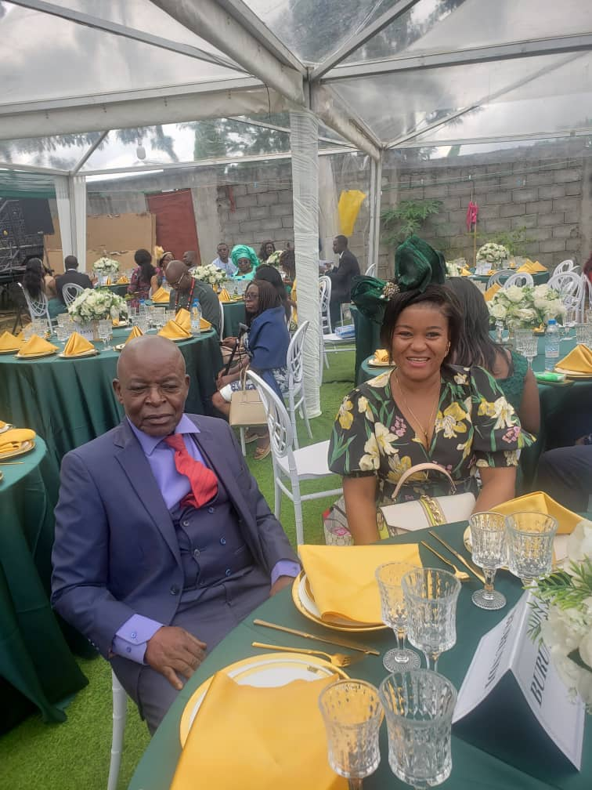

Comment vous dire en si peu de temps qui était mon père ? C'était un homme très cultivé, qui avait toujours une anecdote à raconter.
Au cours de ces semaines à l'hôpital ou chez lui, il a pu me dire : « Stéphanie, reste regarder les enfants. »
Repose en paix, Papa. Ta force et ta bonté vivent à travers nous. Ta voix résonne dans nos cœurs. Nous sommes fiers d'avoir eu pour père un homme comme toi. Ta grande ouverture d'esprit et ton humour manqueront à tout le monde.
Je t'aime, Papa. Repose en paix.